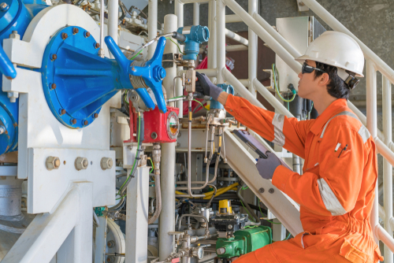

WHAT DO MECHANICAL ENGINEERING DO?
Mechanical engineering combines creativity, knowledge and analytical tools to complete the difficult task of shaping an idea into reality.
This transformation happens at the personal scale, affecting human lives on a level we can reach out and touch like robotic prostheses. It happens on the local scale, affecting people in community-level spaces, like with agile interconnected microgrids. And it happens on bigger scales, like with advanced power systems, through engineering that operates nationwide or across the globe.

Mechanical engineers have an enormous range of opportunity and their education mirrors this breadth of subjects. Students concentrate on one area while strengthening analytical and problem-solving skills applicable to any engineering situation.
Technology itself has also shaped how mechanical engineers work and the suite of tools has grown quite powerful in recent decades. Computer-aided engineering (CAE) is an umbrella term that covers everything from typical CAD techniques to computer-aided manufacturing to computer-aided engineering, involving finite element analysis (FEA) and computational fluid dynamics (CFD). These tools and others have further broadened the horizons of mechanical engineering.